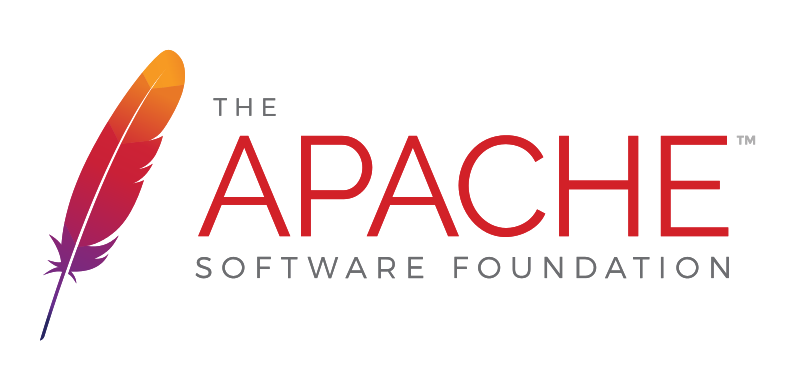

Diseños de Sitios Web
301122_54 UNAD
Objetivo
El objetivo de este OVI (objeto virtual de aprendizaje) es el de enseñar al usuario que es un CRUD (create, read, update, delete) y guiarlo para desarrollar un ejemplo usando tecnologia PHP, Apache y MySql.
Recursos



Diseñado y construido por Diego A. Sanchez.
Universidad Nacional
Abierta y a Distancia
La Universidad Nacional Abierta y a Distancia (UNAD) tiene como misión contribuir a la educación para todos a través de la modalidad abierta, a distancia y en ambientes virtuales de aprendizaje, mediante la acción pedagógica, la proyección social, el desarrollo regional y la proyección comunitaria, la inclusión, la investigación, la internacionalización y las innovaciones metodológicas y didácticas, con la utilización de las tecnologías de la información y las comunicaciones para fomentar y acompañar el aprendizaje autónomo, generador de cultura y espíritu emprendedor que, en el marco de la sociedad global y del conocimiento, propicie el desarrollo económico, social y humano sostenible de las comunidades locales, regionales y globales con calidad, eficiencia y equidad social.

Ciencias básicas
tecnología e ingenieria
La Universidad Nacional Abierta y a Distancia UNAD, a través del programa de Ingeniería de Sistemas tiene como propósito formar profesionales capaces de planear, asesorar y dirigir proyectos de desarrollo tecnológico relacionados con la implementación de sistemas informáticos en procesos socioeconómicos de producción y servicios.